#15443 1 2007-05-30T06:11:32Z Turtle Okay, you can say your favorite pokemon. You can repost if you forgot something and NEED to cry it out to the world. Just don't double post.
Most T&I's dont have rules, but I want this to be a straightforward topic, so here are the rules:
1. No bashing of pokemon (in general) whatsoever. The worst that you can do is say something like "Well, I like the concept of pikachu, but raichu stinks!" or "The older generations were way better than the newer ones."
2. DO NOT MAKE A LAME ATTEMPT TO DESCRIBE A POKEMON THAT YOU CANNOT NAME. Please look it up on wikipedia, or elsewhere. Wikipedia has it, trust me.
3. Talk of the actual pokemon trading card and as to whether or not ANYONE understands the rules is permitted.
4. Talk of videogames may be included in discussions.
5. Other talk of pokemon may be permitted. PM me if you want to ask. Please try to stay on topic.
Now then, my favorite pokemon are snorlax, mew, psyduck, squirtle, nidoking, scyther, scizor, lugia, tyrannitar, togepi, and unown.
I may add more later.
EDIT: ADDED: Gengar and Ditto. Can't believe I forgot those.
Metanember Edit, '08: As of right now, in Crystal Version, my lineup is Gengar, Pikachu (level 40some), Suicune, Tyranitar, Typhlosion, and Snorlax. Lugia, Aerodactyl, Dragonite and a couple others are backup.
...and yeah, I should be too old to be playing. So what?
#325621 2 2007-05-30T06:36:13Z nevermore DITTO CUBONE! HITMONLEE! None of those new generation pokemon.
This thread was definitely created a while back.
#325623 3 2007-05-30T06:42:44Z George Yeah, before the obliteration of all T&I topics.
My favourite would be Dragonite. It's been in my heart since day one. But my favourite generation would probably be in the GSC timeline.
#325654 5 2007-05-30T10:28:17Z astro The original series of Pokemon all the way. Gooooooo Charmander!
#325666 6 2007-05-30T12:40:47Z Yahoozy The older generations were way better than the newer ones. Cubone and/or Ditto would have to be my favourites and/or favourite.
#325683 8 2007-05-30T14:30:54Z Shark Tyrannitar was cool; but Gengar was cooler.
#325685 9 2007-05-30T14:46:17Z Ad FERALIGATR FTW! RAWR
2nd Gen was just as cool. Then it went OTT.
#325686 10 2007-05-30T15:04:04Z Sgt. Poptarts Eevee, No Pokemon is better.
#325700 11 2007-05-30T16:01:46Z Twistkill Tyranitar, Blaziken, Lugia, Exploud, Scizor, Blastoise, Charizard, Houndoom... I think I have more, but meh.
#325713 13 2007-05-30T16:43:19Z smort Charizard all the way.
DRAG'N!
#325723 14 2007-05-30T17:11:27Z epigone Psyduck. Too bad he sucks in the game.
#325752 15 2007-05-30T18:24:57Z Tsukatu I'm only familiar with the first 150, since I didn't have anything to do with Pokemon after the Gameboy games.
But yeah, Gengar all the way.
#325804 19 2007-05-30T20:59:30Z Navick It's gotta be Zapdos.
Question: Who the
heck is this guy?!
Attachment (lost): post-26-1180558927.png
#325812 20 2007-05-30T21:17:53Z Zres It's gotta be Zapdos.
Question: Who the heck is this guy?!
Giratina.
My favorite new gen's gotta be Shaymin.
#325816 21 2007-05-30T21:25:44Z DarkN Originally I was going to say Unown or something. But now it has to be Giratina!
#325840 22 2007-05-30T22:15:30Z Cerberus Diglet. Or whatever he's called.
#325845 23 2007-05-30T22:21:45Z Mr__X Dragonite, Sceptile, Lugia. Definitel my favorites. The ones in the new one are kinda weird, but they're okay.
I found it funny in Pokemon Diamond/Pearl that they used phrases like noob and for the win.

EDIT: I found an uber-grammar error, so I changed it...
#325848 24 2007-05-30T22:22:31Z wilderness Raichu or Snorlax. I can't decide

#325852 25 2007-05-30T22:36:28Z Turtle So I take it that the older generations are liked more, overall.
Right?
#325871 26 2007-05-30T23:53:02Z Navick I found it funny in Pokemon Diamond/Pearl that they used phrases like noob and for the win.
I know. I was really surprised in Oreburgh when the guy popped out and said noob.
#326197 28 2007-06-01T10:29:10Z Chase It's gotta be Zapdos.
Question: Who the heck is this guy?!
I GOTS ONE WITH A DUSK BALL!!!11!
Yeah, LV.70 Ghost/Dragon, totally pwns.
My favourites?
Eevee, Dragonair, Umbreon.
New gen? Buizel ftw!
#326203 29 2007-06-01T10:53:43Z CDotLeach First 150/151 (FTW!): Squirtle, Charmander, Mewtwo, Mew, Arbok, Raichu, Sandslash, Ninetales, Dugtrio, Arcanine, Golem, Gengar, Haunter, Ditto.
The Rest: Typhlosion, Feraligatr, Pichu, Togepi, Marill, Sudowoodo, Umbreon, Steelix, Scizor, Ursaring, Miltank, Lugia, Blaziken, Groudon and Kyogre.
Whole Pokedex

#365381 31 2007-09-16T16:57:29Z LNKNPRK Blaziken and the regis, even though they suck at battles.
#365389 32 2007-09-16T17:08:29Z DemonzLunchBreak Blaziken and the regis, even though they suck at battles.
The regis don't suck at battles! The regis are great tanks (well, at least, registeel and regice are). Regigigas kinda sucks because of his ability, though.
Anyway, my favorite poke is probably either

or

Edit:

And how could I forget this guy?
#432601 35 2008-04-30T02:15:12Z scythe33 The existence of Scyther precludes my ability to make a decision.
That said, Scyther.
#432608 36 2008-04-30T03:01:06Z Turtle And while reading this topic, I see this ad.
Attachment (lost): post-26-1209524466.jpg
#432614 37 2008-04-30T03:14:49Z Topolord Charmander! charmander char-char /man/der!
#432641 38 2008-04-30T06:24:53Z uber Mine has got to be Wobbafett. I'm not quite sure if it's spelled like that. Might be different. Anyways, he is funny 'cos he screws up the team rocket's missions and stuff.
#432668 39 2008-04-30T10:00:10Z brocerius Ampharos! I taught mine fire punch, dynamicpunch, icepunch and thunder. Legendary.
But, obviously, Gengar is the boy.
#432680 40 2008-04-30T11:31:40Z Condog All my favs, in no particular order.
Giratina
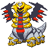
Gallade
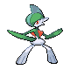
Drapion
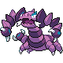
Bronzong
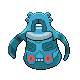
Metagross
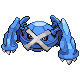
Cradily
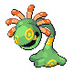
Flygon
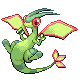
Aggron
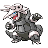
Blaziken
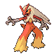
Tyranitar
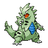
Foretress
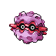
Ampharos
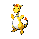
#432688 41 2008-04-30T12:36:39Z Weisslenny0 Oh, wow... I still think Pikachu. Other cool Pokemon, though...
Bulbasaur, Squirtle, and Charmander (plus all their evolutions, excluding the middle ones because they're bad).
I also like Pidgeot, Diglett, Moltres/Zapdos/Articuno, plus Entei (never really liked the other two dogs).
Also, Misdreavus, and Fortress are good.
Oh, and Abra + evolutions, and ghosts are good, too.
Yeah, I'm an "original colours" man, but wha'cha gunna do?
Oh, and also Mew = preeeeety.
#432704 42 2008-04-30T14:21:24Z Dead_N Definitely Spiritomb, Sableye and Dialga (they have no weaknesses)

#432763 43 2008-04-30T18:08:56Z Heartattack Unknown, Jynx. The original ones are the best by far
#432854 44 2008-04-30T21:43:15Z heatwave Metagross
Flygon
Aggron
FTW.
Also, Absol, Crawdaunt, and of course, my most favorite Pokemon:
Salamence.
Wailord is a beast though.
#432861 45 2008-04-30T21:59:39Z eternal_moonlight Mine are:
Cubone
Heatron
Ho-Ho
Blazikin
#432882 46 2008-04-30T23:13:25Z southpaw Quote: http://bulbapedia.bulbagarden.net/wiki/Kangaskhan_(Pok%C3%A9mon)
Kangaskhan is a brown and cream colored kangaroo-like creature with a little purple baby.
That said, Kangaskhan has been my favorite since I gave him Ice Punch, Fire Punch, Electric Punch that other punch that confuses the enemy or something like that.
Second just might have to be Eevee.
#432920 47 2008-05-01T00:36:55Z HylianHitman Definitely Charmander, definitely. His tail is on fire!
#433027 48 2008-05-01T12:46:07Z shan1392 I loved blaziken, metagross and dialgo
I stopped playing about a 2 years ago